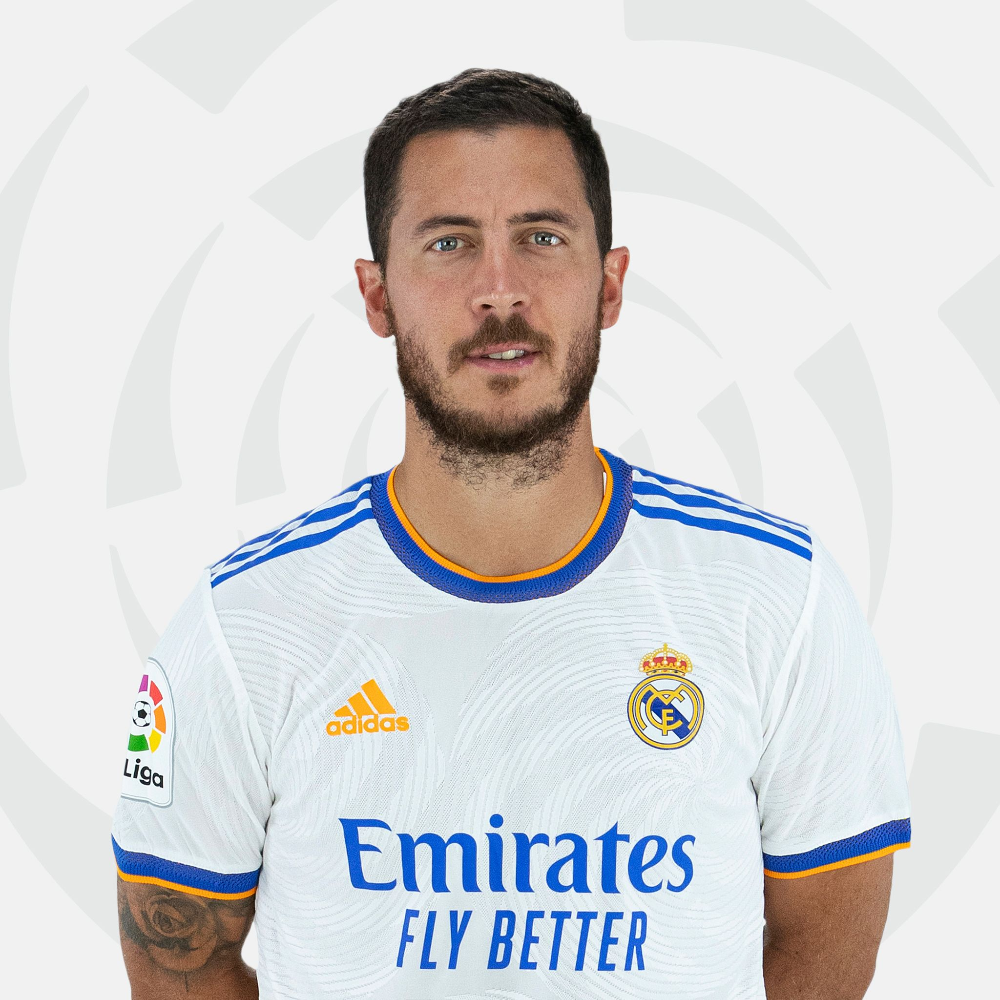
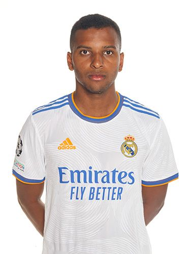
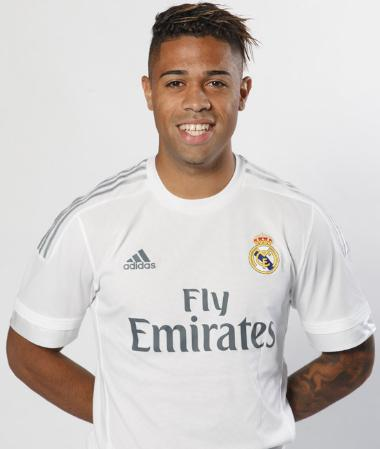
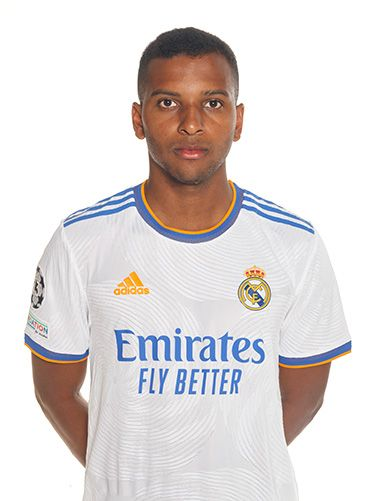
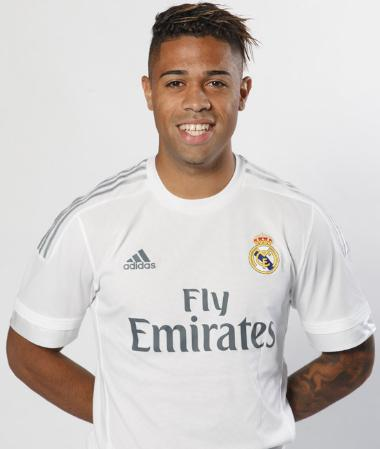

A Real Madrid támadói
| Név |
Nemzetiség |
Születési idő |
Mezszám |
Piaci érték |
Korábbi csapat |
| Eden Hazard |
Belga |
1991. január 7. |
7 |
25 millió euró |
Chelsea |
| Karim Benzema |
Francia |
1987. december 19. |
9 |
25 millió euró |
Olympique Lyon |
| Marco Asensio |
Spanyol |
1996. január 26. |
11 |
35 millió euró |
Mallorca |
| Luka Jović |
Szerb |
1997. december 23. |
16 |
20 millió euró |
Eintracht Frankfurt |
| Lucas Vázquez |
Spanyol |
1991. július 1. |
17 |
15 millió euró |
Utánpótlásból kinevelt játékos |
| Gareth Bale |
Walesi |
1989. július 16. |
18 |
10 millió euró |
Tottenham Hotspur |
| Vinícius Júnior |
Brazil |
2000. július 12. |
20 |
50 millió euró |
Flamengo |
| Rodrygo Goes |
Brazil |
2001. január 9. |
21 |
35 millió euró |
Santos |
| Mariano Díaz |
Spanyol/Dominikai |
1993. augusztus 1. |
24 |
10 millió euró |
Olympique Lyon |



 


